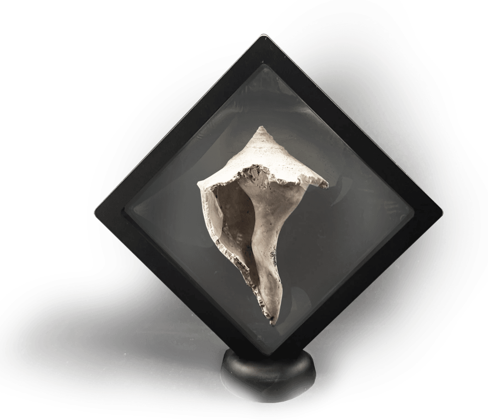

The Shell
The Secrets of Eternal Shells
Florida has captivated me with its hidden and vivid beauty. Nature here is rich with symbols and meanings, revealing themselves to those who take the time to notice. The central theme of my work is shells — traces of ancient seas, frozen in time. Millions of years old, fossilized, yet still preserving their elegance.
A shell is a mystery, one that each person deciphers in their own way. It holds the mathematical harmony of Fibonacci, the precision and logic of architecture, and reflections of human nature. It embodies the relentless passage of time while safeguarding the secret of eternal beauty. Feminine curves and phallic forms merge in this symbol, balancing fragility and resilience.
I do not offer direct hints, only space for contemplation. Each painting carries its own emotion, its own shade of meaning, inviting the viewer to find something deeply personal within. These fossilized forms, once shaped by the tides, now exist as artifacts of eternity, whispering their silent stories. Through my work, I seek to preserve that dialogue between past and present, nature and art, allowing each observer to uncover their own connection.